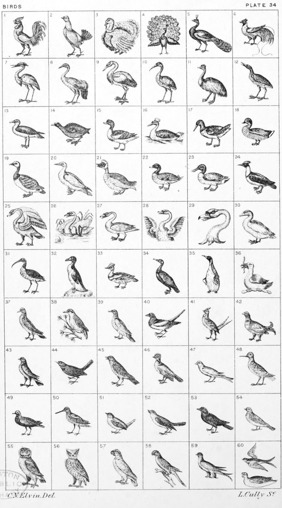

Plate 34.

Plate 34.
- Cock, or Dunghill Cock
- Game Cock
- Turkey Cock in his Pride
- Peacock in his Pride
- Peacock Close
- Bird of Paradise
- Heron
- Crane
- Stork
- Ibis
- Emeu
- Bittern
- Sea Gull
- Coot
- Sheldrake
- Curly Headed Diver
- Sea Pie, or Oyster Catcher
- Teal
- Barnacle Goose
- Gannet, or Solon Goose
- Muscovy Duck
- Drake, Duck, or Mallard
- Shoveller
- Didapper
- Swan, rousant
- Swan in a Loch
- Swan, Close
- Demi Swan wings expanded
- Swan's head erased
- Goose
- Curlew
- Auk
- Smew, or White Nun
- Cormorant
- Penguin
- A Morfex, "on a wreath ar and b. a
Morfex argent bekyd sa. therin a
Cele in p'pur coler." Crest granted
to the Town of Newark upon Trent
co. Notts 8th Dec, 1561
- Ring-Dove
- Nuthatch on a nut branch
- Wood Pigeon
- Magpie
- Heath-Cock, or Moor-Cock
- Grouse, or Moorfowl
- Heraldic Bird
- Blackbird, or Merle
- Thrush
- Jay
- Canary
- Woodcock
- Plover
- Snipe
- Wren
- Nightingale
- Jackdaw
- Chaffinch
- Owl
- Horned Owl, or Eared Owl
- Parrot, or Popinjay
- Parrakeet
- Martlet
- Martlet Volant ; and Cannet